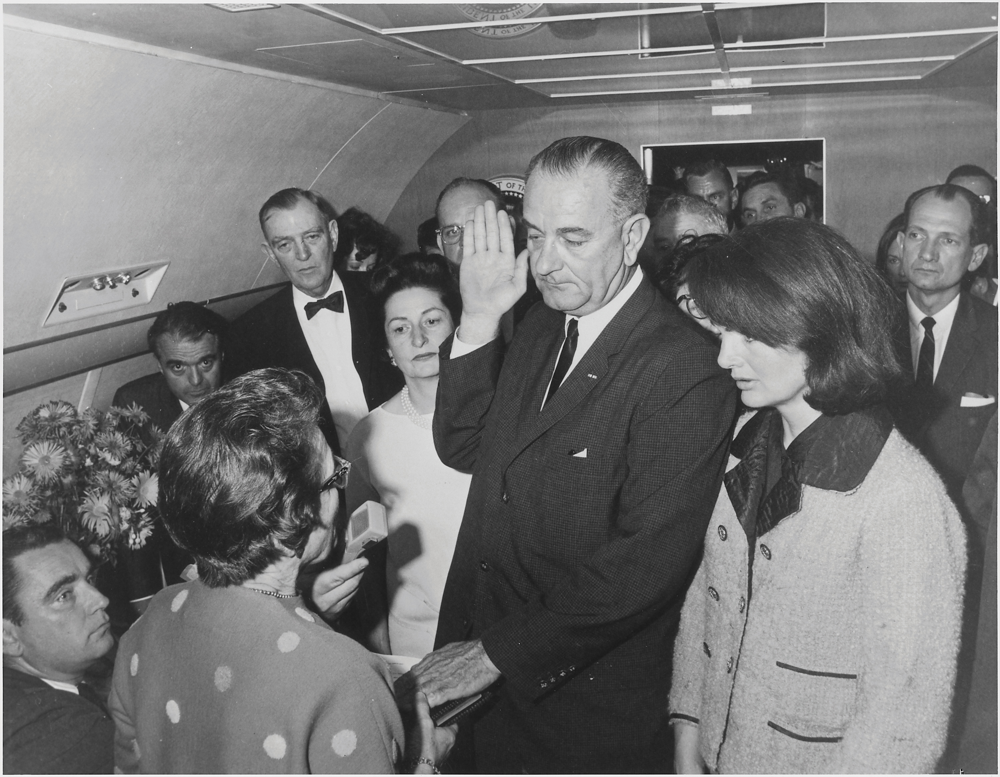
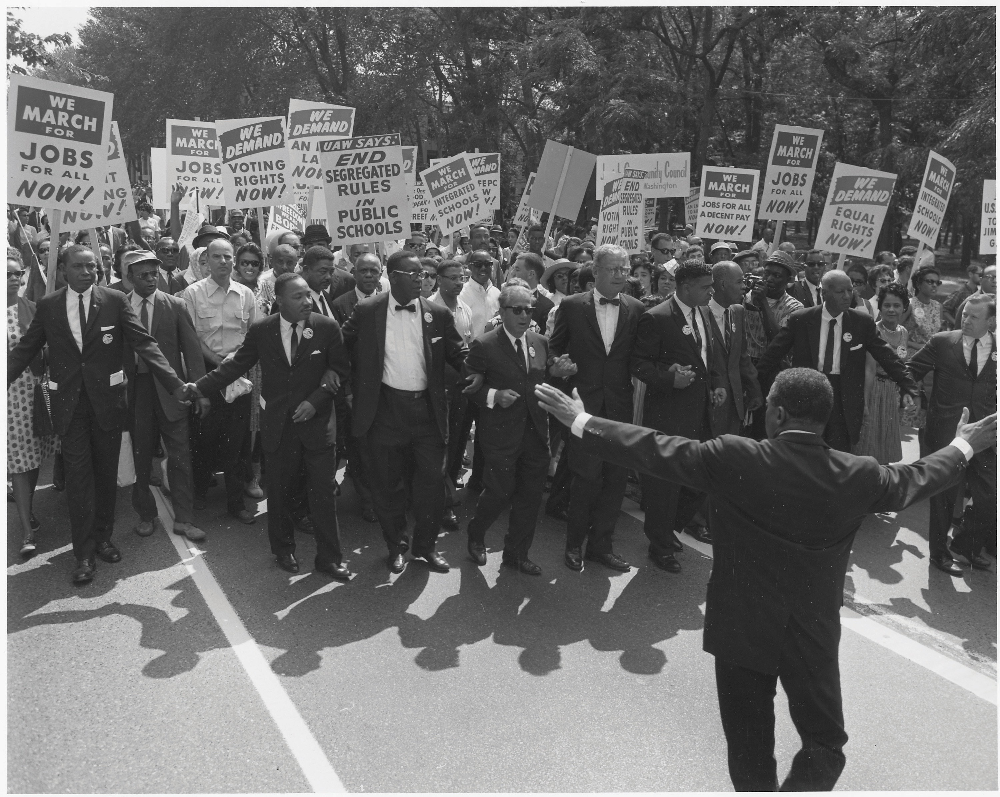
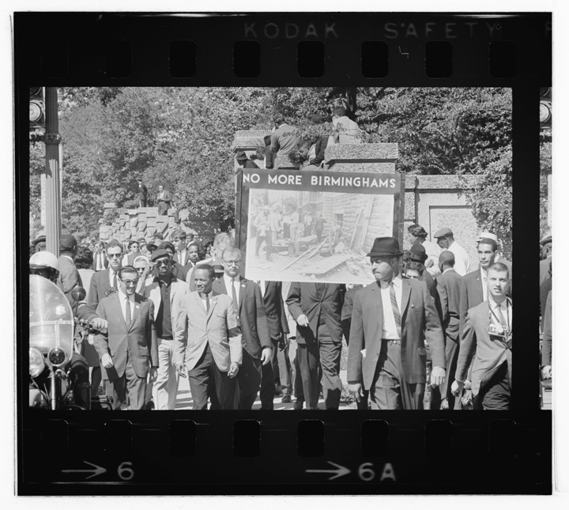
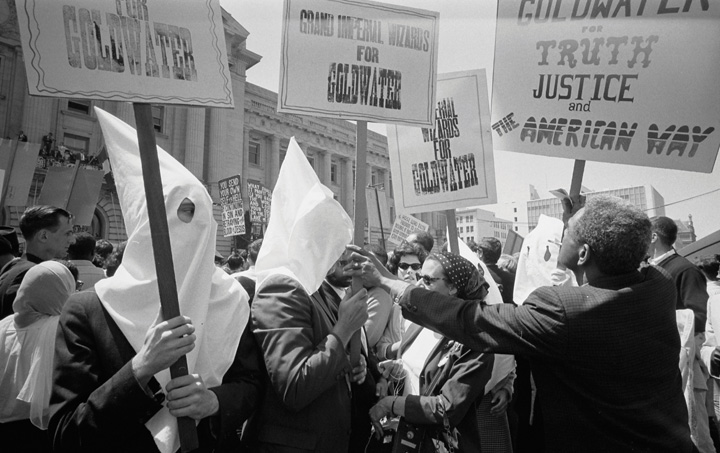
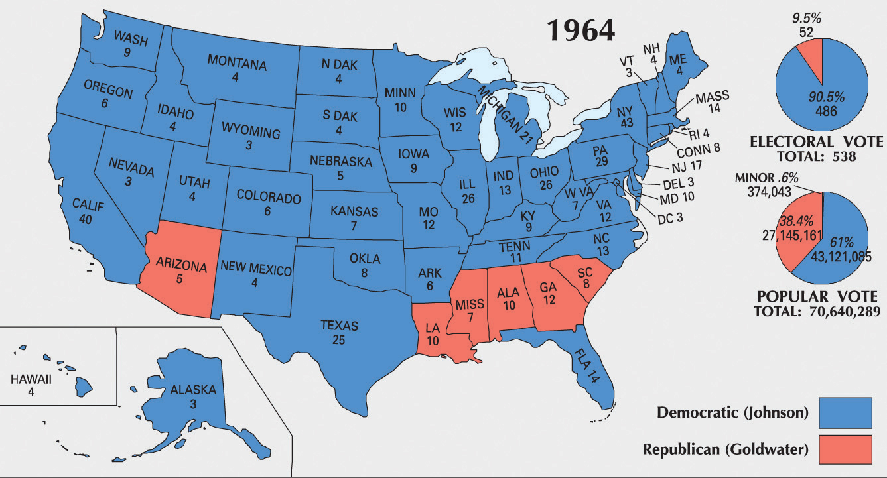
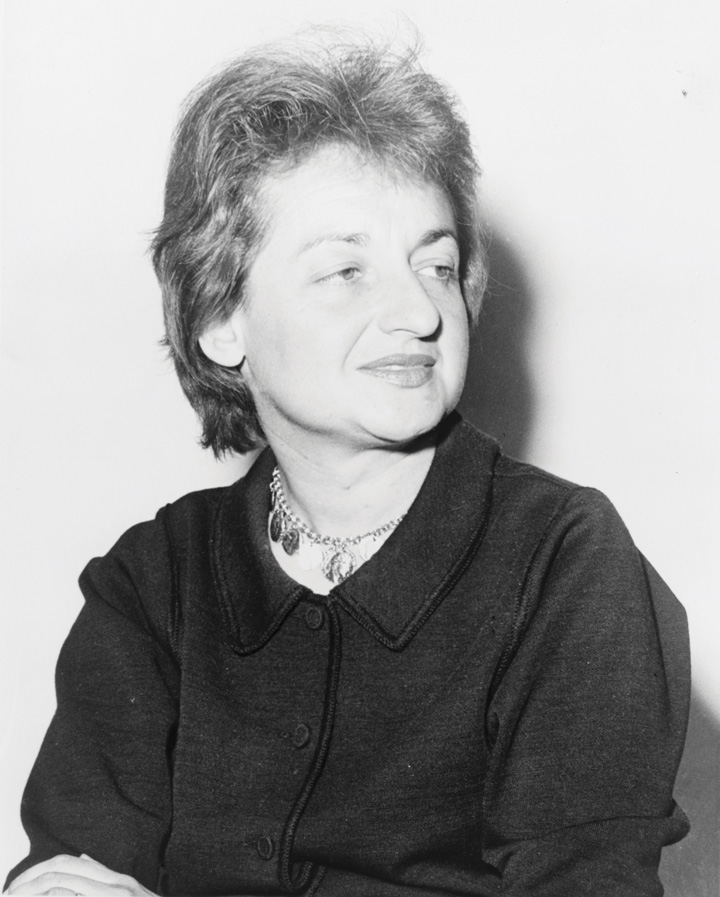

In 1963, President John F. Kennedy (JFK) once again enjoyed high approval ratings. The economy was prospering, and the ill-conceived Bay of Pigs Invasion was all but forgotten in the wake of Kennedy’s successful posturing in Berlin and the resolution of the Cuban Missile Crisis. Kennedy even began to support the limited civil rights initiatives he reluctantly inherited. At the same time, he sought to distance himself from some liberals who desired greater changes than he believed would be politically advantageous to support. His mild support of causes that were unpopular at the moment—such as civil rights—would later be among his most vaunted achievements.
The president’s admirers claim that Kennedy would have done more to support meaningful federal intervention to defend civil rights had he not been assassinated in 1963. Some also believe he would have supported the withdrawal of US troops from Vietnam. During his lifetime, Kennedy was restrained by political calculations in these regards. Privately, Kennedy responded to those calling for withdrawal from Vietnam, more support for civil rights, and more aggressive backing for health care reform with the promise that he would address these issues once he had secured a second term.
It was in pursuit of that second term that led Kennedy to Dallas in November 1963. Texas Democrats were in the midst of a political civil war regarding issues such as civil rights. To demonstrate his leadership and ensure his reelection, Kennedy hoped to unite Democrats in one of the most conservative states. He succeeded in this goal but only by becoming a martyr. On November 22, 1963, President Kennedy was shot while parading through Dallas in the back of an open limousine. He was pronounced dead a half hour later in a Dallas hospital. News of the tragedy spread instantly throughout the nation. For the first time, most Americans turned to television news anchors rather than newspaper reporters for information about a major news story. Not only did this result in a deluge of dramatic images but also in a number of reports filed in haste as some of the live television reports featured more speculation than fact. Conspiracy theories spread rapidly in living rooms across the nation as reports about the accused assassin Lee Harvey Oswald circulated. Oswald had planned on traveling to Moscow, leading some Americans to expect that the assassination had been part of a Communist plot.
Figure 11.1
Kennedy’s vice president Lyndon Baines Johnson being sworn in as president immediately following the Kennedy assassination.
The nature of live television also provided a degree of reassurance that the mechanism of government would continue to function. Millions watched as Vice President Lyndon Johnson took the oath of office while the widowed Jackie Kennedy stood in the background, still wearing a dress that bore the stains of her late husband’s blood. The capture of Oswald might have closed the case. However, live television again recorded a killing related to the Kennedy murder. Dallas nightclub owner Jack Ruby jumped out of a crowd and shot Oswald while he was being transferred from one jail to another. Oswald died less than an hour later.
Kennedy’s death left Americans with a sense that his vision for the United States might be left unfulfilled, even if few Americans agreed on what that vision entailed. Supreme Court Chief Justice Earl Warren led a six-month investigation, concluding that Oswald had acted alone in killing the president. Many Americans were unconvinced by the Warren committee’s report. Even if they disagreed about the circumstances surrounding the Kennedy assassination and the direction the country was headed, Americans agreed that the system of government established by the Constitution was durable.
Throughout history and especially during the 1960s, presidential assassinations usually resulted in chaos and turmoil, perhaps even civil war. In the United States in 1963, the presidency was quietly transferred to former Vice President Lyndon B. Johnson (LBJ) according to the terms set out by the Constitution. As president, Johnson invoked the memory of the slain leader in support of the most significant civil rights legislation since Reconstruction. He also secured passage of Medicare and Medicaid, two federal government–sponsored health care programs for the elderly and the poor. Despite these significant domestic achievements, Johnson’s bid for more sweeping reform and possible reelection would be derailed by a seemingly endless war in Southeastern Asia. For Democrats, it seemed as if the history of the Korean War was repeating itself.
A New Dealer raised in the cutthroat world of Texas politics, Johnson was a lifelong and ambitious politician who suddenly saw himself elevated to the office he had coveted his entire life. The tragic circumstances that led to his presidency precluded celebration, however, and Johnson somberly accepted the challenge of healing the nation while quietly securing his nomination and victory in the upcoming 1964 election. For Johnson, the key to both was to portray himself as the successor to Kennedy while presenting his policies as the embodiment of the martyred president’s will.
Addressing Congress moments after the nation had laid its slain leader to rest, Johnson urged Congress to “let us continue” the work of the Kennedy administration. For Johnson, this meant that an assassin’s bullet should not derail the liberal consensus based on tax reduction, federal guarantees of civil rights, and antipoverty programs. Many who had once opposed the former vice president’s policies pointed out the unfairness of Johnson equating a martyred president with his own political agenda. At the same time, Johnson skillfully presented previously controversial measures such as the 1964 Civil Rights ActPerhaps the most significant piece of civil rights legislation in US history, the 1964 Civil Rights Act banned racial discrimination in public accommodations and employment. The law also outlawed gender discrimination and established a federal agency to enforce all of its terms. as a tribute to their fallen leader and the only proper response to an act of violence. As a result, in death, Kennedy became eternally connected to a civil rights bill he had only cautiously supported in life.
African American leaders recognized Johnson’s strategy and went along with the charade by eulogizing the former president in ways reminiscent of the historical memory of Lincoln. Civil rights leaders reminded Americans that JFK had promised to eliminate housing discrimination “with the stroke of a pen” while a candidate. In actuality, Kennedy had failed to act on his promise, which had prompted thousands of African Americans to mail pens to the White House to remind him of this promise. However, presenting civil rights as part of an unfulfilled agenda of a martyred president soon became an effective way to secure historic reform legislation.
Black leaders also pointed out that JFK had asked Martin Luther King to draft a second Emancipation Proclamation that he would sign on January 1, 1963, to mark the centennial of the original. Never mind, of course, that the president had also forsaken this promise and even failed to respond to the proclamation King had prepared for the president. Kennedy was a martyred hero, these civil rights leaders reminded themselves, and any connection between the former president and their cause must be promoted regardless of historical accuracy. Perhaps Kennedy would have supported the 1964 Civil Rights bill, they privately counseled one another; after all, the former president had recently addressed the nation on the issue against the counsel of his political advisers who feared any support for the proposed bill would cost him the election.
Figure 11.2
The organizers of the 1963 March on Washington lead the march in front of thousands of participants with signs calling for equal employment, voting rights, and the end of segregation. Each of the leading national civil rights organizations was represented on the program, and Martin Luther King Jr. was selected to speak last. Although women were often the most active organizers within these organizations, efforts to recognize their contribution were only belatedly added to the schedule of events.
Martin Luther King Jr. recognized that proposing a civil rights bill would not secure its passage in Congress. Even worse, presidents could claim to support the bill only to hide behind its failure each year. This would allow whoever occupied the White House to portray themselves as supporters of civil rights without actually securing any meaningful advances for black voters. King teamed up with veteran organizer A. Phillip Randolph and announced a march on Washington designed to force Congress and President Kennedy (who was still alive at the time) to support the bill. Approximately 300,000 Americans, two thirds of whom were black, converged on the nation’s capital for the March on Washington for Jobs and FreedomA 1963 protest that called on the federal government to pass sweeping civil rights legislation while also publicizing the lack of economic opportunity for African Americans. The march was a coordinated effort between the six leading civil rights organizations and is best remembered for Martin Luther King’s iconic “I Have a Dream” speech. in the summer of 1963. The protest was aimed at publicizing the need for antisegregation laws but also ensuring that all Americans would be given equal political and economic opportunity that would render such laws meaningful.
The march reflected the competing ideas of the six leading civil rights organizations that organized the march. Leaders of the Urban League and A. Phillip Randolph’s labor union spoke of the need for economic advancement, while younger leaders such as John Lewis of CORE were more controversial in calling for more radical change. The meetings also reflected the paternalistic orientation of these organizations; a brief acknowledgment of female leaders was only belatedly added to the agenda.
King was given the final spot on the schedule and rose to the stage after a brief announcement that W. E. B. Du Bois had passed away in Ghana. King then rose to the podium and delivered his famous “I Have a Dream” speech. King’s address remains an iconic moment in US history. It was also a moment where the mantle of leadership was symbolically passed from the generation of Du Bois to the charismatic young preacher from Montgomery, Alabama. Meanwhile, another young and charismatic clergyman named Malcolm XBorn in Omaha and raised in the Midwest, Malcolm X experienced many of the more subtle forms of discrimination that was common in the North. In prison, Malcolm joined the Nation of Islam and became the leading spokesman of the conservative black Muslim sect until his split with Elijah Muhammad in the final year of his life. criticized the March on Washington as a pep rally for sycophants and fools who believed they could promote meaningful change through the existing white-dominated system. The next Sunday, a bomb exploded during services in a black church in Birmingham, killing four little girls. In their memory, Democratic leaders and President Johnson rallied behind the 1964 Civil Rights Act the following year.
Figure 11.3
African Americans in Washington, DC, march in response to the bombing of a black church in Birmingham that killed four young girls. One of the victims was a childhood friend of future Secretary of State Condoleezza Rice.
Virginia congressman and segregationist Howard Smith proposed an amendment to the 1964 Civil Rights Act that added “sex” to the act’s existing provisions, guaranteeing equal opportunity in employment regardless of race, creed, color, and national origin. Because he and the other nine Southern congressmen who supported the amendment prohibiting gender discrimination strongly spoke in opposition to and voted against the Civil Rights Act, most historians believe that Smith’s amendment was intended to divide supporters and ultimately prevent the law from being passed. Smith understood that the majority of his peers now supported a law banning racial discrimination, but he believed that they considered gender to be a valid consideration among employers and would not pass the Civil Rights Act if it mandated equal treatment of men and women.
If derailing the Civil Rights Act of 1964 was indeed Smith’s intent, he was borrowing a strategy used by opponents of civil rights provisions dating from Reconstruction. For example, opponents of black suffrage in the 1860s added women’s suffrage to proposed laws that would have permitted black men to vote. These provisions led to the defeat of black suffrage before the passage of the Fifteenth Amendment, as well as the defeat of several civil rights laws throughout the twentieth century. In 1964, however, the Civil Rights Act was passed as amended, outlawing segregation while banning both racial and gender discrimination by employers. The act also created the Equal Employment Opportunity Commission (EEOC), which was charged with enforcing the terms of the new law.
One of the strongest opponents of the 1964 Civil Rights Act was Arizona Republican senator Barry GoldwaterA leading conservative and Republican nominee for president in 1964, Goldwater rallied those who believed the federal government was becoming too big and too powerful. Goldwater also opposed the 1964 Civil Rights Act, while personally claiming that he supported the goals of integration. Goldwater was defeated in a landslide in 1964 but continued to be a leading member of the conservative wing of the Republican Party.. Goldwater represented the conservative wing of the party and secured the Republican presidential nomination shortly after the Civil Rights Law was passed. As a result, the 1964 election was a clear ideological contest between the relatively liberal Johnson against the archconservative Goldwater. The author of Conscience of a Conservative, a best-selling autobiography that challenged images of the political right as reactionary and void of positive ideas, Goldwater hoped to reverse the growth of government in every way except national defense. As a candidate, he also promised to replace containment with a more aggressive strategy that would strangle and eliminate communism.
Figure 11.4
Arizona senator Barry Goldwater sought to distance himself from extremists such as these Klansmen who were demonstrating on his behalf during the election. However, his recent opposition to the Civil Rights Act of 1964 furthered the association between the conservative movement Goldwater represented and those who opposed racial equality.
Although many Americans equated conservative ideas, such as states’ rights, with the defenders of slavery and racial segregation, Goldwater sought to prove that conservative ideas had positive value for all Americans. He personally approved racial integration in schools but did not believe that the federal government had the power to “force” any state or locality to change the way it did business. More importantly, Goldwater predicted that such attempts would only harden racial prejudice and ensure that well-meaning attempts to integrate schools would fail in ways that harmed all children. For African Americans and many liberal whites, however, Goldwater’s advice to be patient and wait until whites of the Deep South sought integration was disingenuous at best. It also did not help that Goldwater had the backing of leading white segregationists such as Alabama governor George Wallace, who had proclaimed “segregation forever” the year before.
Other conservatives developed organizations and started journals such as the National Review in hopes of spreading their ideas. One of the leading conservative publications, the National Review, had originally supported white Southern intransigence to civil rights in terms that reflected support of white supremacy. By the mid-1960s, however, the journal began to be more critical of arch-segregationists and focused more on the issue of limited federal power. Among intellectuals, the political and economic theories of Friedrich Hayek united most conservatives and increasingly influenced moderates and even some liberals. Hayek posited that increases in governmental power, even under the best of intentions, would inevitably build upon one another until the government had grown so big and so powerful that it controlled nearly every aspect of life.
Other intellectual conservatives offered a spin on Marx’s view of historical progression to warn the United States that like other great powers, the US government was in danger of growing too big and squandering its resources at home and abroad. Liberals countered that conservatives only supported limited government when it came to social programs and actually favored increased spending for military and law enforcement. Conservative intellectuals continued to refine their ideas in ways that would lead to a conservative revival by the end of the decade. However, in the early 1960s, most Americans identified themselves as liberal. When these individuals imagined a typical conservative, conspiracy theorists like the John Birch SocietyA radical conservative organization that opposed the passage of the Civil Rights Act and viewed US participation in the United Nations as part of a radical conspiracy to lessen the sovereignty of the nation until the world was ruled by a single collectivist government. and militant white segregationists remained the dominant image.
Formed in 1958, followers of the John Birch Society believed they were ideological soldiers in a war against liberals, whose every move was calculated to bring the United States to its knees. By 1963, more than 100,000 Birchers spent much of their time writing letters to editors warning of the dangers of governmental programs and civil rights as harbingers of Socialism and interracial marriage. Even candidate Goldwater was not conservative enough for these on the extreme right, but he spoke to many of the Birchers’ fears that the Republican Party had been co-opted by liberals. Why else would President Eisenhower have permitted FDR’s programs to continue, he asked, while most leading Republicans in Congress acted as if they were running some kind of “dime-store New Deal”?
Goldwater not only spoke to the fears of many anxious whites who thought society was changing too quickly, but he also spoke without the usual politician’s filter. At times, this could be harmful. For example, speaking to a group of Midwesterners, the Republican nominee once asserted that the nation would be better off if the East Coast, a reference to Northeastern liberals, was severed from the nation and sent “out to sea.” The Democrats responded by running TV ads throughout the East that featured a cartoon saw slicing off the East Coast while Goldwater’s words played in the background. One of LBJ’s ads went too far by insinuating that a vote for Goldwater was a vote for nuclear armageddon. Although the ad was immediately recalled, Goldwater’s own rhetoric had created the notion that he lacked the patient temperament needed to be a leader of a nuclear power. Johnson won every state outside of the Deep South and Goldwater’s home state of Arizona.
Figure 11.5
Lyndon Johnson defeated the conservative Republican Barry Goldwater in 1964. However, conservative ideas would gain support following Goldwater’s landslide defeat.
Goldwater’s support among Southern whites from Louisiana to South Carolina was largely the result of LBJ’s support of legislation forever banning racial segregation. Because of this legislation, black Americans generally supported Johnson’s campaign even though they recognized that Johnson shared many of the racial assumptions of many whites. Legendary musician Dizzy Gillespie ran a mock campaign for president that trumpeted many of Johnson’s shortcomings. Gillespie promised to support the Democratic candidate when he finally offered genuine support for black Americans. Until then, the trumpet player campaigned promising to end the Vietnam War, poverty, and racial segregation. Gillespie’s America would be personified by his replacement of the White House with a “Blues House” where all Americans would be welcome. Gillespie also promised to appoint a number of prominent jazz musicians as cabinet officials and ambassadors, explaining his belief that the improvisational nature of jazz required individuals who intrinsically knew how to work with others to create harmony. The campaign raised money for civil rights causes, but it was more effective in reminding the Democrats that they needed to support civil rights initiatives if they expected the black vote in the next election.
One of black voters’ leading demands was that their local schools finally be required to comply with the 1954 Supreme Court decision in Brown v. Board of Education. The schools of Virginia provided a clear example that the federal government would have to intervene. After the schools of Virginia failed to integrate, black plaintiffs sued and won three separate victories as the federal courts ordered the integration of the schools in Warren County, Charlottesville, and Norfolk. In reaction, the Virginia governor ordered that all of the public schools in these districts close, and state officials required that any school district ordered to integrate must also close its doors. This strategy of thwarting integration at all costs, even if it meant closing schools for white children, was known as massive resistanceA term used to describe the various strategies employed by Southern whites to prevent school integration. Some of these strategies included passing laws mandating that schools be closed if forced to integrate.. In 1959, black plaintiffs in Prince Edward County, the same Virginia school district that had been home to one of the original five cases that were consolidated into Brown v. Board, sued in federal court. As had been the case in the other Virginia cases, the board was ordered to integrate. However, the all-white school board had already decided that it would close all of the county’s public schools if the appeal was lost. In addition, the federal courts had not yet declared that Brown v. Board applied to private schools. As a result, board members had devised a plan where public school resources would be used to create a number of “private” schools for white children.
The “privatization” of the Prince Edward County schools in the early 1960s demonstrated a new tactic available for advocates of massive resistance. Publicly owned schools were “leased” to individuals who hired the same white public school teachers to teach in what was now called a “private” school. Although segregationists were able to use a variety of methods to finance their schools with public money, the schools still required some tuition and private donations to function. As a result, many white children were also denied school privileges. As a form of denying racial discrimination, the school board suggested that middle-class African American parents open similar “private” schools for their children. While some black parents pursued this strategy with mixed results, others pointed out that doing so simply perpetuated segregation while shifting more of the financial burden for school funding on parents. Other black parents continued their fight in the courts until they secured a Supreme Court decision ordering the county school board to reopen and integrate the public schools. During the five years that the schools were closed, working-class white and black families drew upon networks of community and kin, pooling money and sending their children to live with out-of-state families.
Photos of angry demonstrations and even violence against the first black children to attend a particular school provide the most poignant images of school integration. However, the greatest obstacle to integration may have been waged by thousands of community groups that defended segregation with the demeanor of a local PTA meeting. Many of these organizations had progressive-sounding names that gave the appearance of defending children or promoting harmony. Others adopted names such as the White Citizens Council (WCC). Each of these groups devised methods to indefinitely postpone school integration through procedural delays, legal challenges, redrawing school boundaries, and creating integration advisory boards that never met.
Groups such as the WCC also sought ways to intimidate black leaders and isolate black families whose children were part of an integration lawsuit. WCC chapters were composed of city officials, business leaders, and middle-class white parents. Some chapters even received city and state tax dollars to fund their operations. The preferred tactic was usually nonviolent, convincing employers to fire any person known to favor integration. If an individual was self-employed, the WCC worked covertly to convince local banks to cut a family’s line of credit, even foreclose on mortgages that were in good standing to force integrationists to leave town.
While the WCC officially condemned violence, those black leaders and families that somehow continued their fight for integration were frequently the victims of drive-by shootings and arson. The year following the Brown decision, seven black leaders were murdered or went missing in Mississippi alone. In contrast to Border South states like Virginia and large cities such as Little Rock, few lawsuits were filed to try to force the integration of schools in Mississippi, Alabama, and Georgia. Border South states such as Missouri and West Virginia saw little violence but only piecemeal integration until the late 1950s and early 1960s. School boards in these states typically integrated only one or two grades each year.
The gradual elimination of legal segregation did not remove barriers to meaningful integration. Black students were often barred or heavily discouraged from participating in extracurricular activities they had previously enjoyed. More importantly, the end of segregation also meant that many black teachers were fired rather than permitted to teach in mixed-race schools. Black communities lost control of venerable institutions such as Sumner High in St. Louis and Garnett High in Charleston, West Virginia. These schools were the center of black community life and boasted a teaching corps with more advanced degrees than many colleges. Integration was recognized as an important step toward racial equality, yet for black students who navigated a gauntlet of racism each morning, black teachers who lost their jobs, and black community members who lost control of their local schools, integration continued to place the burden of race squarely on their shoulders.
Figure 11.6
Betty Friedan was a labor activist and the author of the influential book The Feminine Mystique. She would also become the founder and first president of the National Organization for Women (NOW).
Even as more and more Americans supported the idea that race should not be a barrier to employment, most Americans believed that gender was a valid consideration on the job market. Newspapers divided their advertisements for jobs into “Help Wanted (Male)” and “Help Wanted (Female)” sections, and most large businesses kept separate lists of male and female employees for purposes of determining seniority and promotion. Given the assumption that women were provided for by a male breadwinner, few companies provided benefits such as health insurance or pensions for female employees. For those female workers who were married to husbands who received family benefits, these kinds of benefits were less important than fair pay. But for the 40 percent of working women who were single, and for the women who might someday become divorced or widowed, gendered assumptions about wages and benefits were painful reminders that they were not part of the idealized female world of pampered domesticity.
At the same time, many women believed that gender differences should be considered in the workforce. Many states had laws granting time off for pregnancy and child care and other provisions specifically designed to protect women in the workplace. Some of these laws, such as limitations on the number of hours a woman might be required to work, might either benefit a particular female employee or serve as a barrier from obtaining needed overtime pay. In addition, some companies had internal policies granting women longer breaks, days off for child care, and even more days for sick leave. Some women worried about whether laws mandating an end to gender discrimination might lead to the elimination of laws protecting pregnant workers or recognizing the domestic responsibilities of women who worked part time.
The emerging civil rights movement and the experience of many women in labor unions helped to promote ideas about the rights of the individual and the power of collective action. Even as the nation’s imagined “ideal woman” took a step away from “Rosie the Riveter” and toward the popularized image of sitcom housewives Donna Reed and June Cleaver, a number of female activists mobilized in favor of greater opportunities for women who worked outside of the home by choice or necessity.
One of the greatest obstacles these women had to overcome was the notion that female employment outside the home was unnatural or undesirable. Many women, as well as men, viewed female labor as a temporary evil that should only be endured during periods of personal financial crisis or war. Many activists tried to show the nation that the idealized image of a dependent housewife within a well-provisioned home not only limited women’s freedoms but also ignored the reality of life for many women. Nearly half of working women at this time were single, and 10 percent of children were born out of wedlock throughout the 1950s and 1960s. Others tried a more radical approach using the rhetoric of labor unions about the rights and dignity of all workers combined with the tactics of civil rights activists.
Similar to feminists of previous generations, women’s rights activists used both conservative and radical approaches to spread their message. For example, one popular conservative strategy was to liken opponents of equal employment as cowardly assailants of women and mothers, many of whom lacked “male protection.” Others sought to connect women’s patriotic service against fascism in World War II with the ongoing contest against Communism. Others like Betty FriedanAn author for several labor organizations, Friedan challenged the practices of US corporations in paying women less than men for the same work. Friedan is most famous as a writer for her book The Feminine Mystique, which challenged Americans to reconsider the notion that women were naturally content living a life of domesticity. Friedan would later found the National Organization of Women and become its first president. became involved in labor unions and exposed corporate wage tables that used gender as a determinative factor. For example, one of Friedan’s articles listed the pay rates for male and female laborers in leading companies like General Electric and Westinghouse. The same article revealed that the average black woman earned less than half of the average white woman and that the pay differential between men and women resulted in billions in corporate profits.
Friedan rose to prominence after publishing The Feminine Mystique, a book capturing the discontent that many American women felt in a society that minimized their contributions and restricted their options. She and other women of the postwar period helped to create what soon became known as Second Wave FeminismA blanket term for the growth of women’s rights activism in the late 1950s and 1960s, Second Wave Feminism refers to attempts to eliminate social and economic discrimination against women. The First Wave refers to those who fought for the elimination of legal barriers, such as the rights of women to vote, hold private property, and run for political office. Members of the Second Wave argued that the elimination of legal barriers had not removed all forms of discrimination against women. Although commonly associated with the 1960s and 1970s, the roots of Second Wave Feminism can be seen in the postwar era.. By this definition, previous generations of feminists were part of a First Wave that worked to overturn legal obstacles to equality, such as prohibitions against women’s suffrage and property ownership. Women of the postwar period were part of a Second Wave that challenged lasting inequalities, which remained impervious to the repeal of explicitly discriminatory laws. In so doing, these 1960s feminists sought to establish and defend equal rights and opportunities for women. In an era where most women accepted a modified version of the “separate sphere,” feminists of the 1960s challenged the notion that gender should predetermine one’s role in society.
Most women in the 1960s took a more tactical approach, seeking tangible gains for women in the workforce, including safeguards against termination for life events such as marriage and childbirth. This was important, because employers at this time frequently dismissed female employees when their pregnancies became known. These mothers were generally replaced by younger women who could be paid less and would agree to contracts stipulating that they would resign if they should become pregnant. This practice not only thwarted a woman’s ability to achieve seniority and promotion but also reinforced notions that female employment was temporary. Few companies would bother training even the most talented young women for positions beyond the entry level if they believed their ability to serve the company would be interrupted for two or three decades following childbirth and motherhood.
Dozens of industrial nations had provisions guaranteeing time off and some financial compensation for pregnant employees by 1950. In the United States, only Rhode Island had a similar provision at the state level, and it would take nearly three decades for the federal government to pass similar legislation. Women’s leaders and organizations in the United States participated in the United Nations International Labor Organization, which, among other things, sought to define and defend the rights of female workers. In 1952, this organization recommended that employers be required to provide medical coverage and twelve weeks of paid leave for pregnant women. Most Americans paid little attention to these recommendations and believed that companies should not be required to provide even unpaid leaves of absence. Even the more radical American women who participated in the 1952 meetings believed that the UN recommendation would result in fewer companies being willing to hire women of child-bearing age. As a result, women’s groups in the United States lobbied for provisions guaranteeing that pregnant women could keep their jobs and take unpaid leaves of absence. With the exception of state and local laws, their efforts were not rewarded until the Pregnancy Discrimination Act of 1978.